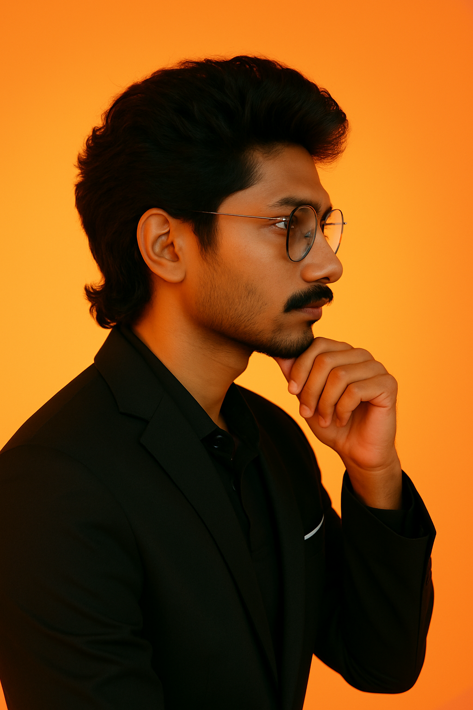

Building intelligent sensing and vision systems to transform food safety and quality assessment. PhD candidate at the University of Arkansas, fusing hyperspectral imaging, LiDAR, machine learning, and robotics to solve real-world agricultural challenges.

I am a PhD candidate in Food Science at the University of Arkansas, Fayetteville, working under Dr. Dongyi Wang in the SAFE Lab. My research sits at the intersection of intelligent sensing, multimodal imaging, and machine learning — applied to real-world food quality and safety challenges.
Before joining UARK, I completed my B.Tech. in Food Technology from Dr. NTR College of Food Science and Technology in India (GPA 8.35/10), which gave me a strong foundation in food science principles that now drives my engineering and AI work.
My PhD journey has evolved from classical ML to building full multimodal pipelines — integrating hyperspectral cameras, LiDAR point clouds, thermal sensors, and transillumination imaging — culminating in systems like MyoVision and Fusion-PointNet that detect chicken breast myopathies with clinical-grade accuracy in real time.
Click any project card to explore its 3D model and full research details.